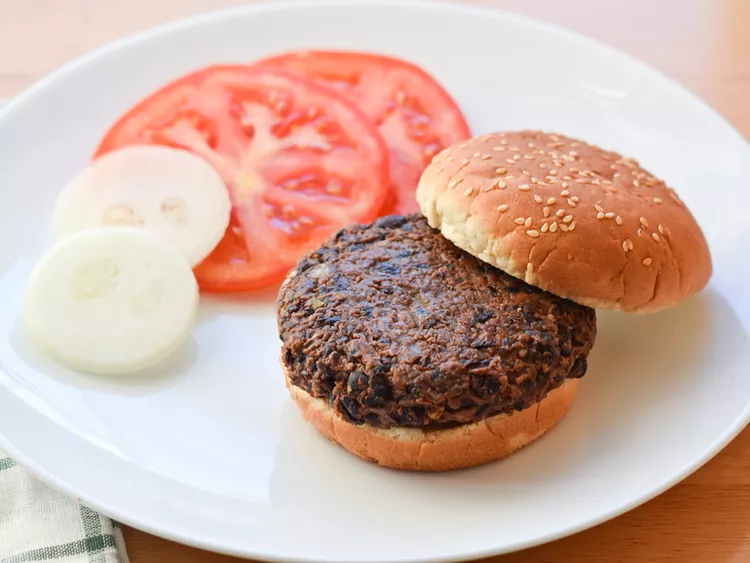

Vegan Black Bean Burgers

Description
Delicious vegan black bean burgers that everyone can enjoy! You don't need
to follow the recipe or amounts exactly — I never do. Serve with your
favorite burger fixings and sweet potato fries.
Ingredients
- 1 (15 ounce) can black beans, drained and rinsed
- 3 baby carrots, grated (Optional)
- ⅓ cup chopped sweet onion
- ¼ cup minced green bell pepper (Optional)
- 1 tablespoon minced garlic
-
3 tablespoons chile-garlic sauce (such as Sriracha®), or to taste
- 1 tablespoon cornstarch
- 1 tablespoon warm water
- 1 teaspoon chili powder
- 1 teaspoon ground cumin
- 1 teaspoon seafood seasoning (such as Old Bay®)
- ¼ teaspoon salt
- ¼ teaspoon ground black pepper
- 2 slices whole-wheat bread, torn into small crumbs
- ¾ cup unbleached flour, or as needed
Steps
-
Preheat the oven to 350 degrees F (175 degrees C). Grease a baking
sheet.
-
Mash black beans in a bowl. Add carrots, onion, bell pepper, and garlic;
mix well.
-
Whisk chile-garlic sauce, cornstarch, water, chili powder, cumin,
seafood seasoning, salt, and black pepper together in a separate small
bowl.
-
Stir chile-garlic sauce mixture into black bean mixture; mix in bread
crumbs. Stir flour, 1/4 cup at a time, into bean mixture until a sticky
batter forms.
-
Spoon mounds of batter onto the prepared baking sheet, about a 3/4-inch
thickness per mound; shape into burgers.
-
Bake in the preheated oven until cooked in the center and crisp on the
outside, about 10 minutes per side.